Para disfrutar al momento
Café de especialidad
Cafés preparados con cuidado para acompañar cada capítulo de tu día.
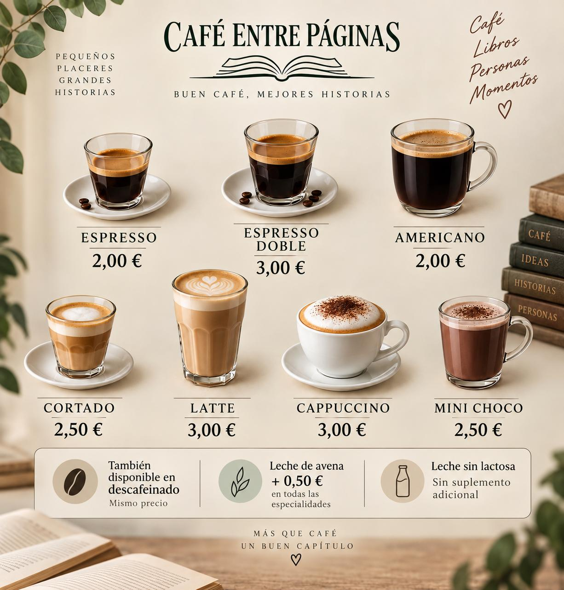
Alcobendas · Próxima apertura
Porque algunas de las mejores conversaciones empiezan con un café, y algunos de los mejores viajes empiezan entre páginas.
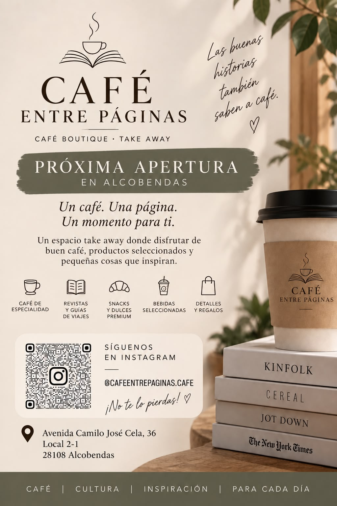
Pulsa la imagen para verla completa
Nuestra selección
Una selección cuidada de café, bebidas, snacks y detalles. Cada imagen es una muestra: pulsa sobre ella para abrir la carta completa en una nueva pestaña.
Para disfrutar al momento
Cafés preparados con cuidado para acompañar cada capítulo de tu día.

Natural · Fresco · Sin azúcares añadidos
Zumos prensados en frío, smoothies y opciones detox para una pausa ligera y natural.
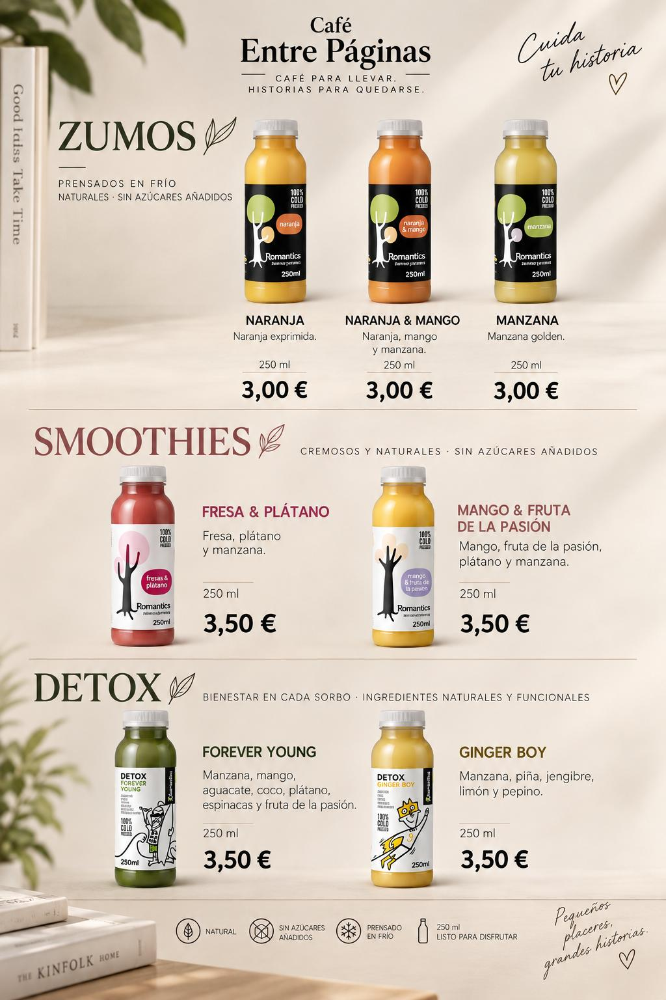
Ligero · Natural · Diferente
Agua mineral natural y opciones con gas, en lata y sin plástico.
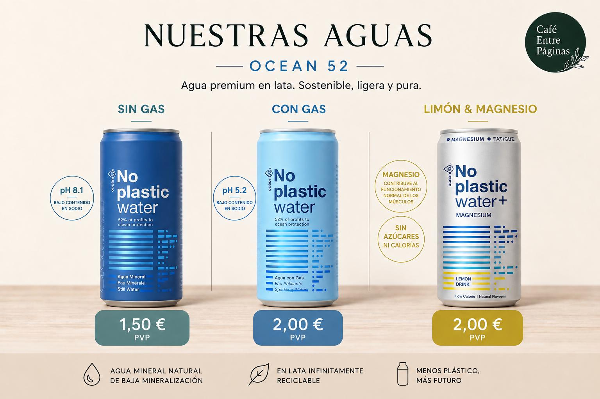
Natural · Premium · Refrescante
Opciones frescas y diferentes para acompañar cualquier momento.
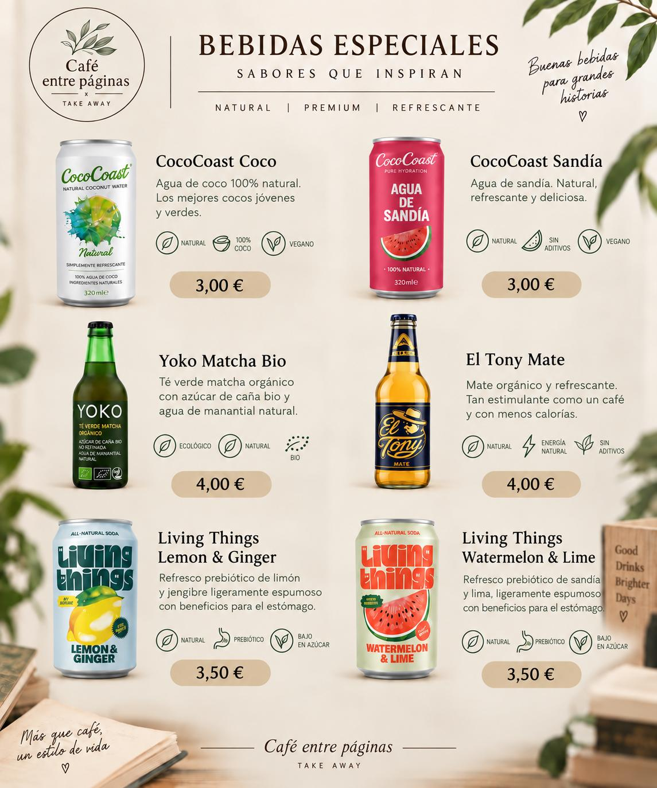
Fresco · Equilibrado · Listo
Ensaladas y wraps preparados para disfrutar de una pausa completa.
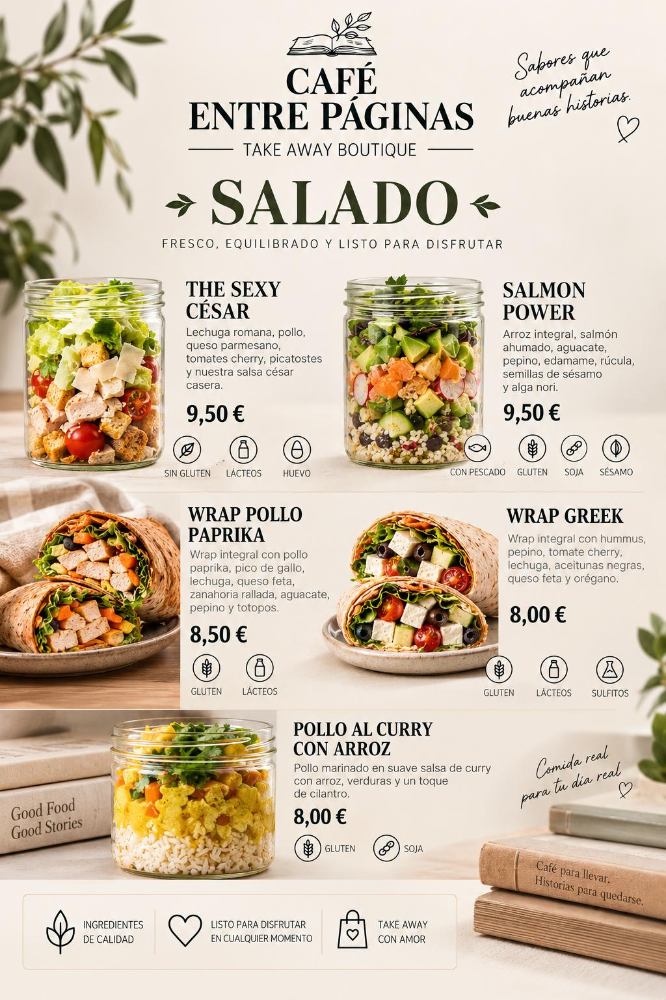
Fresco · Equilibrado · Listo
Más opciones de comida saludable para llevar y disfrutar.
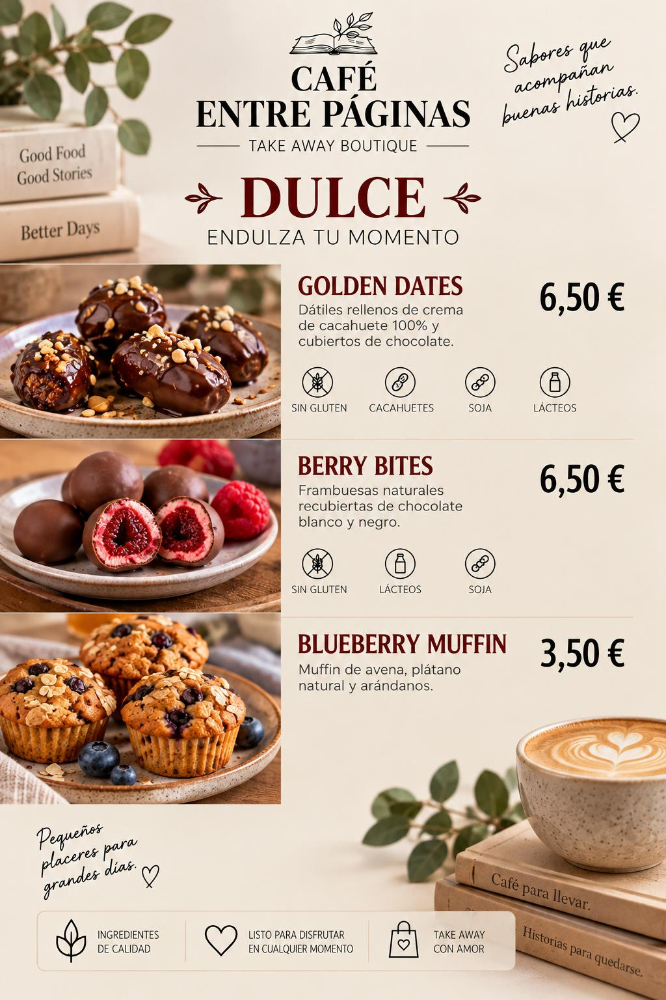
Lectura, sabor y mucha imaginación
Zumo + Muffin + Fruit Rolls.
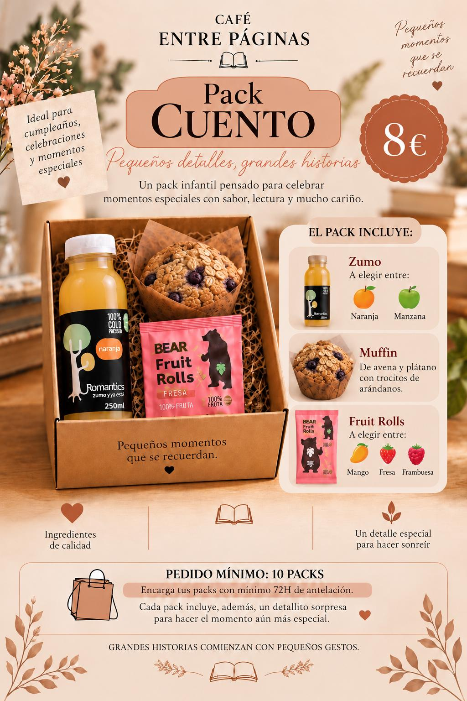
Para regalar lectura y sabor
Zumo + Muffin + Fruit Rolls + Revista.
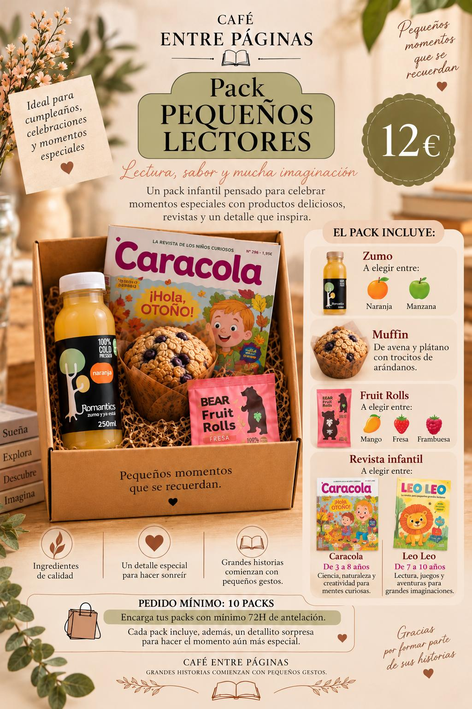
Ideal para tu pausa
Una opción fresca y nutritiva para recargar tu día.
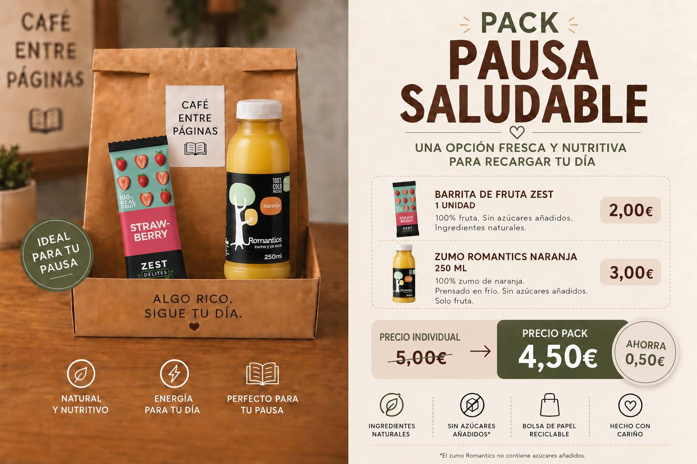
Para disfrutar y desconectar
Una propuesta para acompañar tu pausa con sabor y lectura.
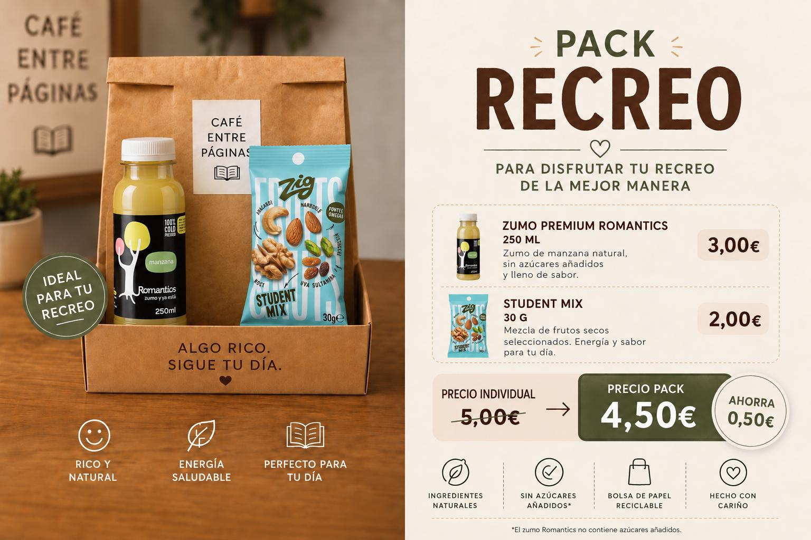
Detalles con intención
Una selección pensada para convertir un café y una historia en un detalle especial.
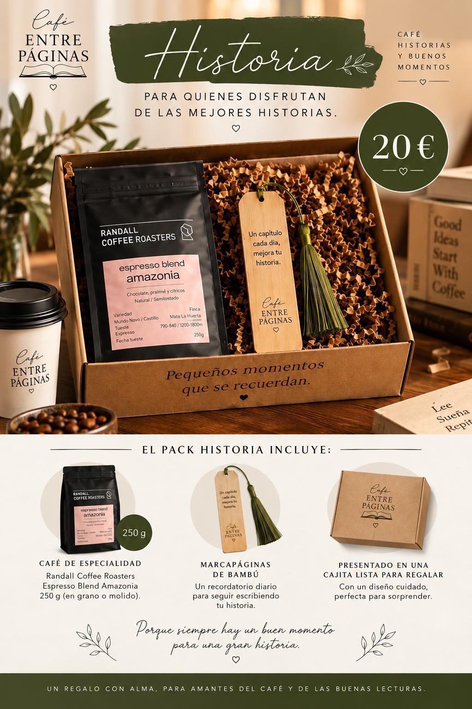
Detalles con intención
Una segunda propuesta para regalar café, lectura y buenos momentos.
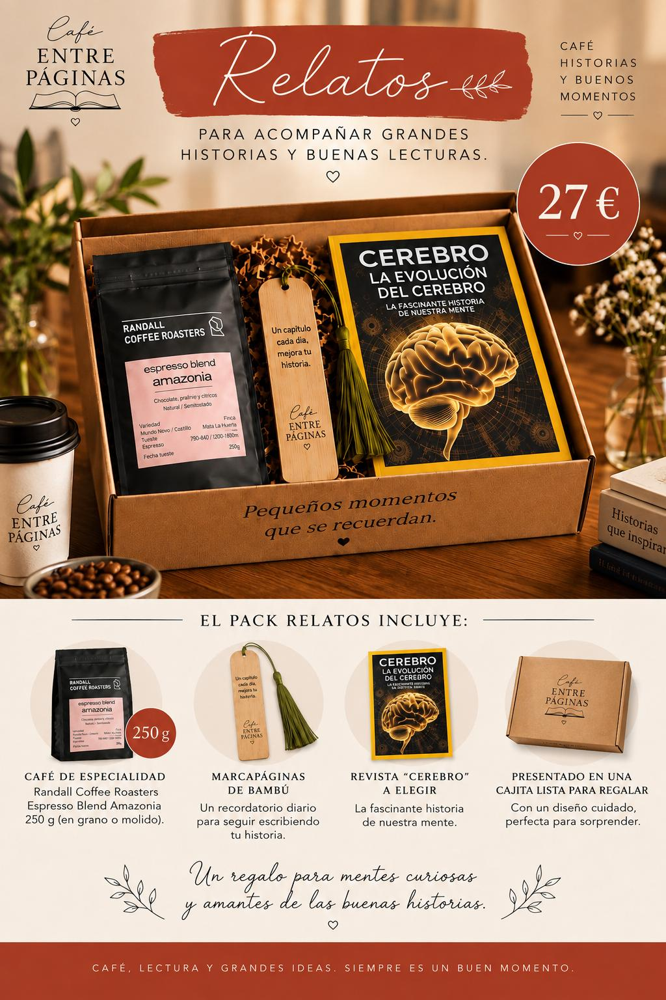
Café · Curiosidad · Descubrimiento
Una selección de lecturas para despertar la curiosidad, descubrir nuevos mundos y acompañar tu próxima pausa.
Para mentes curiosas de 8 a 12 años
Revistas infantiles con contenidos para explorar, aprender y disfrutar en cada página.
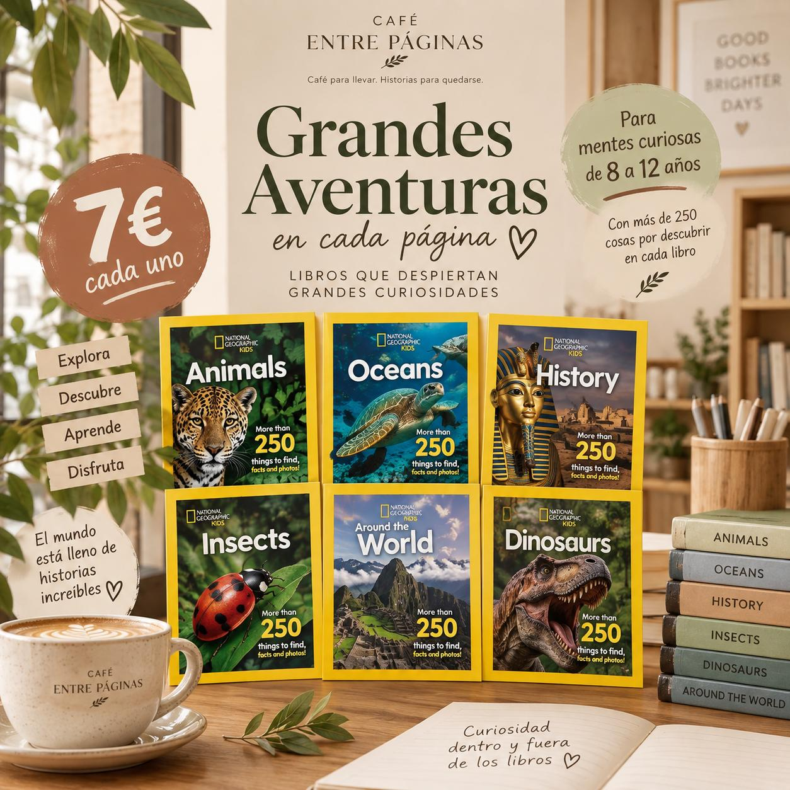
Misterio · Aventura · Lectura juvenil
Historias para quienes disfrutan del misterio, la amistad y los mundos extraordinarios.

Misterio · Aventura · Lectura juvenil
Una segunda propuesta de lectura para fans de Stranger Things.

Próxima apertura
Avda. Camilo José Cela 36 Local 2-1, 28108 Alcobendas, Madrid
InstagramL - V de 08.00 - 16.00
S de 09.30 - 13.30
D cerrado por descanso
Pulsa fuera de la imagen o en la X para cerrar.